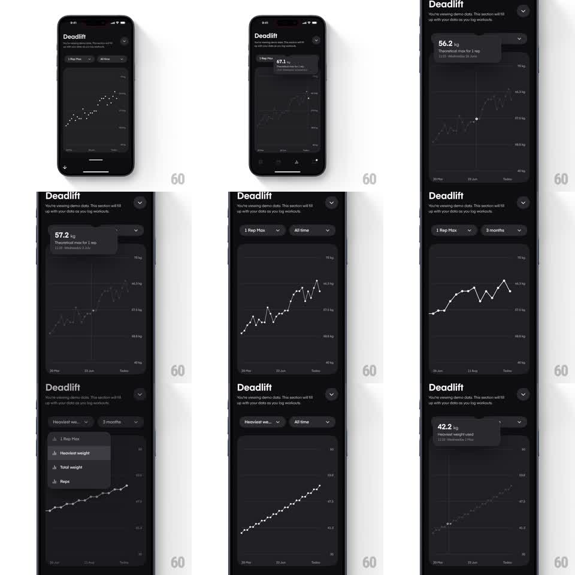

Media
Frame-by-frame

Rebuild this interaction 1:1: Dropset's exercise trends screen - a dark line chart of lift history with dot markers where scrubbing or tapping a point raises a value tooltip, and metric/range dropdowns re-plot the chart with an animated redraw.

Rebuild this interaction 1:1: Dropset's exercise trends screen - a dark line chart of lift history with dot markers where scrubbing or tapping a point raises a value tooltip, and metric/range dropdowns re-plot the chart with an animated redraw.
## Integration
Integration: stack-agnostic spec - springs given as stiffness/damping, timed motions as duration + curve; map every value to your framework and animation library of choice.
## Scene
Dark screen titled "Deadlift" with demo-data notice, two dropdown pills ("1 Rep Max", "All time"), and a line chart: white polyline with circular markers, y-axis weight labels, x-axis dates. Tooltip is a dark elevated card (e.g. "56.2 kg / Theoretical max for 1 rep / date"). Metric menu lists 1 Rep Max, Heaviest weight, Total weight, Reps.
## Motion spec
Pattern: data scrubbing with tooltip + animated dataset transitions.
- Touch/drag on chart: a vertical crosshair line follows the finger, nearest marker highlights (scale 1 -> 1.4, 100ms), tooltip card fades in above it (150ms) and tracks horizontally, flipping sides near edges.
- Release: tooltip and crosshair fade out (150ms).
- Metric switch: dropdown menu slides down (200ms, ease-out); on selection the polyline morphs to the new dataset - points interpolate vertically to new positions (~350ms, ease-in-out), y-axis labels crossfade.
- Range switch re-scales the x-axis with the same interpolation.
## Calibration
- Tooltip always fully on-screen: clamp and flip near edges.
- Point interpolation is per-marker vertical travel - lines never crossfade as images.
## Reduced motion
Dataset swaps with a 200ms fade; tooltip appears without tracking animation.
## Don't miss
- Markers are part of the resting chart, not shown only on scrub.
- Tooltip content includes the metric label and exact date, not just the number.